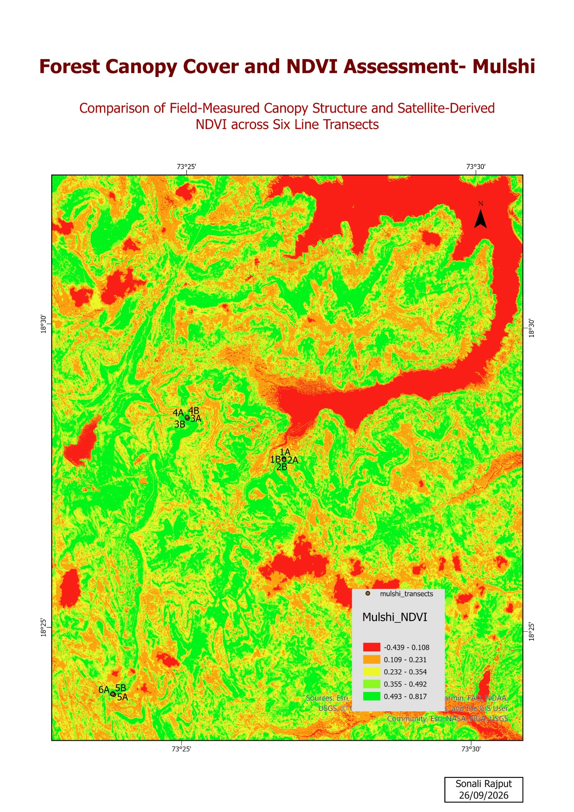

Remote Sensing
Mulshi · NDVI · Field Transects
Forest Canopy Cover & NDVI Assessment
Assessment of satellite-derived NDVI alongside field-measured canopy structure across six line transects in Mulshi, Maharashtra.
NDVI
Satellite Imagery
Line Transects
ArcGIS Pro
🔍 Click to expand